Laffey API 傻瓜式使用教程
适用对象：第一次使用中转站、Codex、Claude Code、CC Switch 的用户。 教程目标：先不用研究原理，照着做。每完成一节，只要对照“成功标志”确认通过，就继续下一节。
先看这一页
如果你是第一次用，只需要记住一句话：
先在 Laffey API 创建 Key，再用 CC Switch 导入 Key，最后打开 Codex 或 Claude Code 测试。你最终要完成什么
这份教程会带你完成三件事：
sk-... 开头的 API Key。你不需要一开始就理解“中转”“Base URL”“环境变量”这些概念。先按步骤完成，能跑通之后，再回头看原理也来得及。
最推荐路线
新手按下面顺序做，不要跳步：
新手建议优先使用 CC Switch 导入，不建议一开始手动改配置文件。手动方式只放在常见问题里排查用。
新手最容易弄错的地方
开始之前先看这几条，可以少踩很多坑：
- Codex / Codex App / Codex CLI：选 OpenAI 分组。
- Claude Code：选 Claude / Anthropic 分组。
- 已经打开的旧终端可能读不到新配置。
计费模式
额度怎么理解
本站的用法可以简单理解为：
本站的站内额度以 美元额度（USD） 显示和扣减，但充值入口使用人民币金额。 你可以把它理解成手机话费：先充值，有余额；每次请求模型，都会按实际用量扣一点。
额度来源
| 来源 | 说明 | 到账形式 |
|---|---|---|
| 在线充值 | 通过站内充值入口支付人民币 | 按 1 RMB = 1 USD 换算为站内美元额度 |
| 优惠券 | 活动、补偿或人工发放的优惠 | 折算为站内美元额度 |
| 兑换码 | 输入管理员发放的兑换码 | 可兑换为站内美元额度，也可能包含并发或订阅权限 |
| 管理员赠送 | 管理员直接为账号增加余额或额度 | 按站内美元额度显示 |
第一步：登录、充值、创建 API Key
这一节要做的是：让你的账号里有钱，并拿到一个可以给工具使用的 Key。
1. 登录并确认有额度
照着做：
成功标志：
账号里有可用额度，后面请求才有钱可扣。如果你还没有充值，后面即使 Key 创建成功，也可能因为余额不足而请求失败。
2. 创建 API Key
照着做：
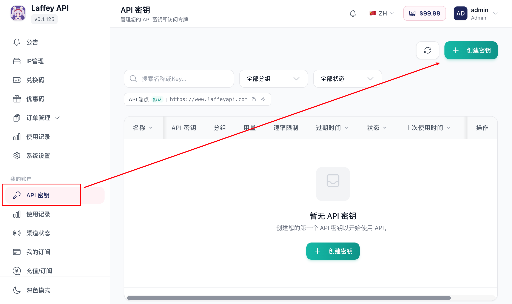
Codex 日常使用Claude Code 编程建议名称写清楚用途。以后 Key 多了，看到名字就知道哪个是给 Codex 用的，哪个是给 Claude Code 用的。
3. 选择正确分组
创建 API Key 时，最重要的是选对分组。
| 你要用什么 | 应该选什么分组 |
|---|---|
| ChatGPT / Codex / Codex App / Codex CLI | OpenAI 分组 |
| Claude Code | Claude / Anthropic 分组 |
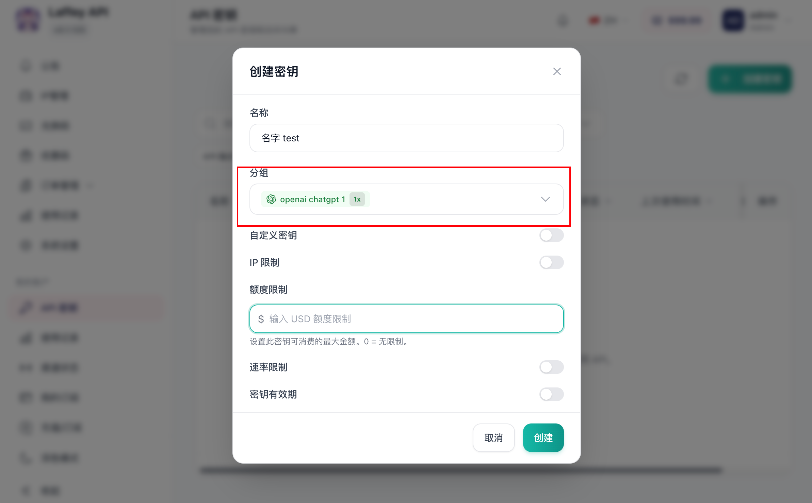
注意：
- Codex 用的 Key 不要绑到 Claude / Anthropic 分组。
- Claude Code 用的 Key 不要绑到 OpenAI / Codex 分组。
- 如果分组选错，工具可能安装正常，但请求会失败。
最简单的记法：
Codex 看 OpenAI。 Claude Code 看 Claude / Anthropic。
4. 复制 API Key
照着做：
sk-... 开头的密钥。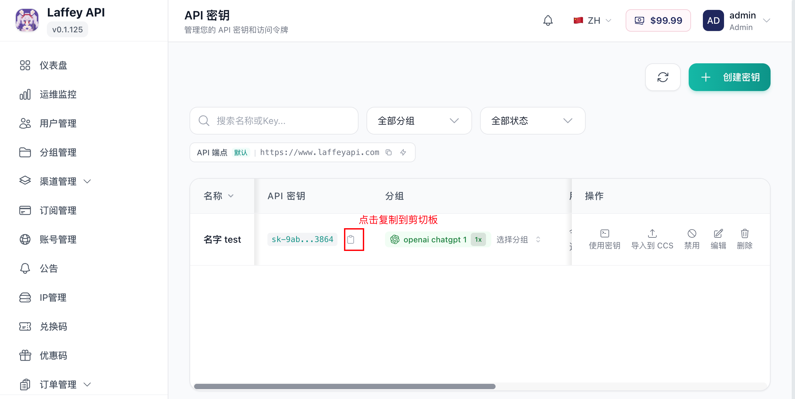
成功标志：
你已经拿到一个 sk-... 开头的 API Key。API Key 可以创建多个，也可以随时回来复制。建议 Codex 和 Claude Code 分别创建不同的 Key，方便以后排查和停用。
第二步：安装 CC Switch
这一节要做的是：安装一个配置切换工具。后面你不用每个客户端都手动填地址和 Key，交给 CC Switch 管理即可。
CC Switch 用来保存多个服务商配置，并在 Codex / Claude 等 agent 之间切换。强烈建议先安装它，后面配置 Codex CLI 和 Claude Code 会更省事。
下载链接：
如果后面点击 导入到 CCS 没反应，通常就是下面几种原因：
第三步：把 Laffey API 导入 CC Switch
这一节的目标是：把你刚才创建的 Laffey API Key 导入到 CC Switch，让 CC Switch 帮你管理服务商配置。
照着做：
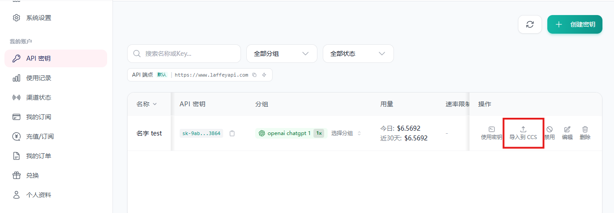
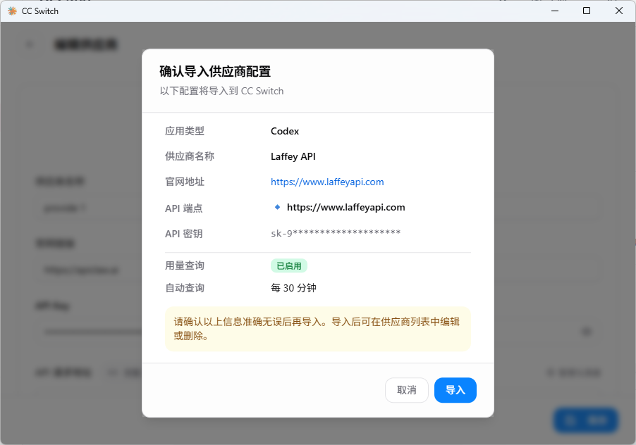
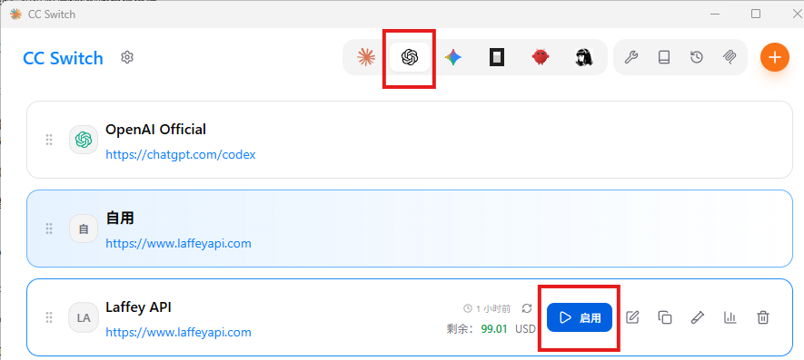
成功标志：
CC Switch 里出现了 Laffey API / Codex 供应商，并且已经切换到它。如果浏览器没有弹窗，或者点击后没有反应，按顺序检查：
ccswitch:// 这种外部应用链接。第四步：配置 Codex
这一节适合想使用 Codex 的用户。
Codex 可以通过官方 App 使用，也可以通过 Codex CLI 在终端里使用。Laffey API 同时支持这两种方式。
使用 Laffey API 中转时，请在 Codex App 或 Codex CLI 中选择刚才通过 CC Switch 导入的 Laffey API 供应商。
先选 Codex App 还是 Codex CLI
| 对比项 | Codex App | Codex CLI |
|---|---|---|
| 使用方式 | 图形界面操作 | 终端输入命令 |
| 适合场景 | 看任务、审查代码、用图形界面管理任务 | 在项目目录中让 Codex 直接读写文件、运行测试 |
| 排错难度 | 界面友好，但底层配置不一定可见 | 配置文件清晰，适合排查 Base URL / Key 问题 |
| 新手建议 | 不想碰命令行，先用 App | 愿意打开终端，想让它直接操作项目文件 |
如果你不知道该选哪个：
Codex App 安装
Codex App 建议直接下载安装包。普通用户不需要打开命令行，也不需要手动安装 Node.js。
| 下载方式 | 链接 | 说明 |
|---|---|---|
| 官网下载 | OpenAI Codex 官网 | 进入页面后点击 Download 下载 |
| 微软商店下载 | Microsoft Store | Windows 用户可在微软商店搜索 CodeX |
| （MAC/WIN） 国内网盘下载 | 网盘下载 | macOS 用户可在苹果商店搜索 Codex |
照着做：
成功标志：
你能打开 Codex App。Codex App 使用：写一个 Hello World
下面只做一个最小示例：让 Codex App 在空文件夹里写一个 helloworld.py。这个示例的目的不是学 Python，而是确认 Codex App 已经能通过 Laffey API 正常工作。
照着做：
helloworldhelloworld 文件夹。这个模式会先让 Codex 给出方案，不会立刻改文件。
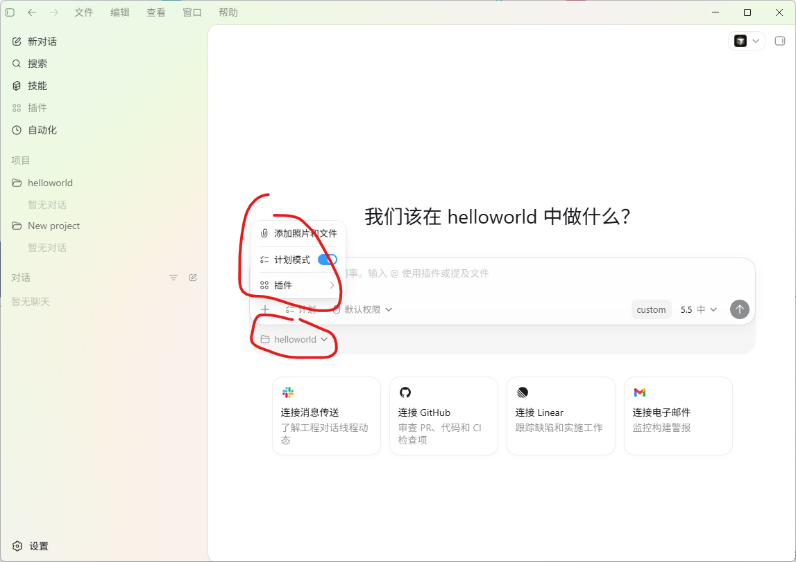
请为当前文件夹里的 Python Hello World 示例制定一个简短计划。
目标：
1. 新建 helloworld.py
2. 内容输出 Hello, world!
3. 新建 README.md，说明如何运行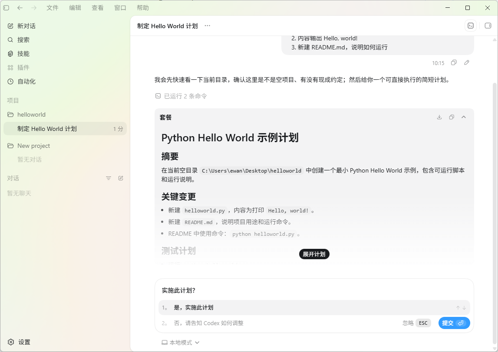
helloworld.py 文件。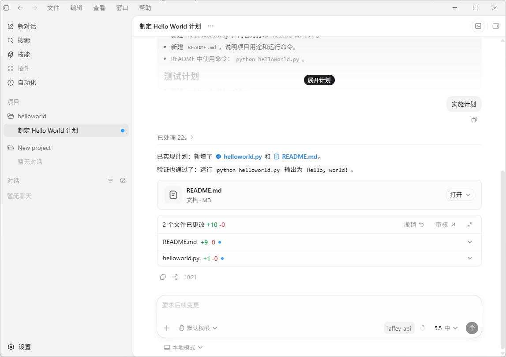
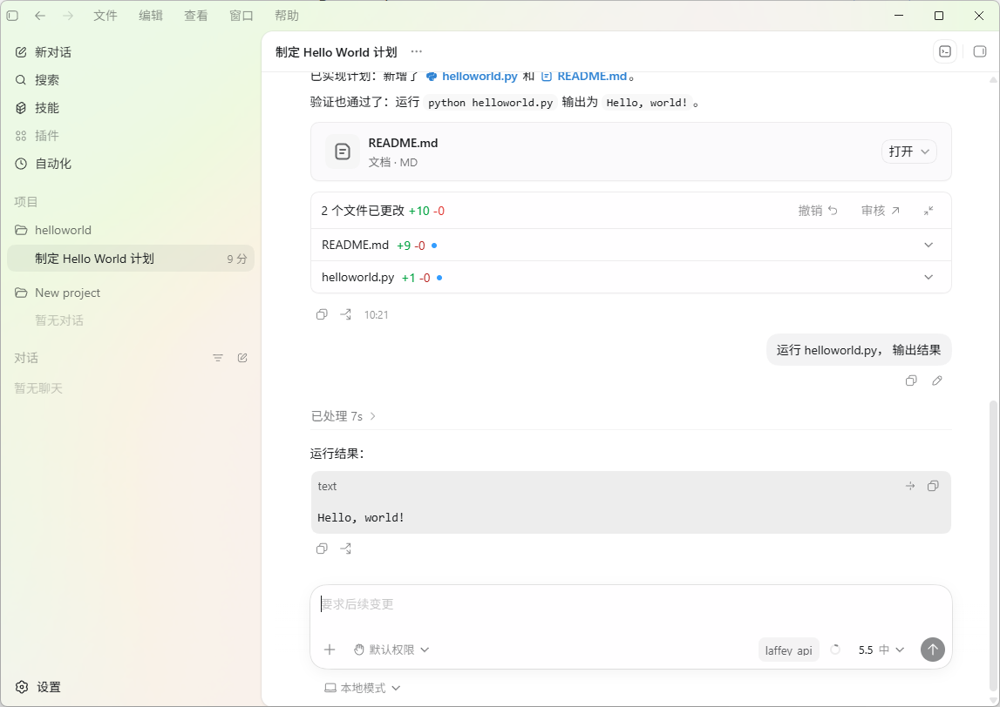
成功标志：
程序正常输出 Hello, world!后续如果新增或更换了 API Key：
Codex CLI 安装
Codex CLI 的使用方式是：在终端进入项目目录，运行 codex，然后把任务交给它。
Codex CLI 需要先安装 Node.js 和 npm，或者在 macOS 上使用 Homebrew 直接安装。
Windows 安装 Codex CLI
照着做：
点击 Windows 开始菜单，搜索 PowerShell，打开 Windows PowerShell。
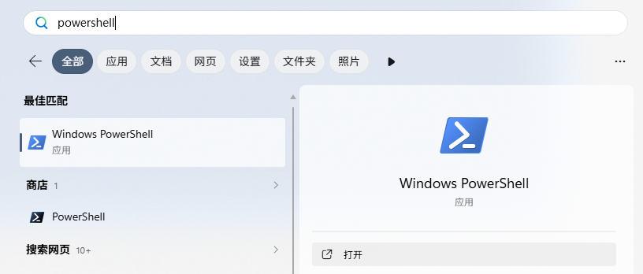
node -v
npm -vv22.x.x 和 10.x.x，说明安装成功。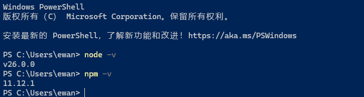
npm install -g @openai/codex --registry=https://registry.npmmirror.com codex --version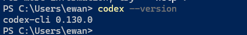
成功标志：
codex --version 能显示版本号。如果 node -v 或 npm -v 找不到命令，通常不是 Codex 的问题，而是 Node.js 没安装好，或者安装后没有重新打开 PowerShell。
macOS 安装 Codex CLI，方式一：Homebrew
如果你已经安装 Homebrew，优先用这种方式。
照着做：
brew install --cask codexcodex --version成功标志：
codex --version 能显示版本号。如果没有安装 Homebrew，请看下一种方式。
macOS 安装 Codex CLI，方式二：Node.js / npm
照着做：
npm install -g @openai/codexcodex --version成功标志：
codex --version 能显示版本号。Codex CLI 使用：写一个 Hello World
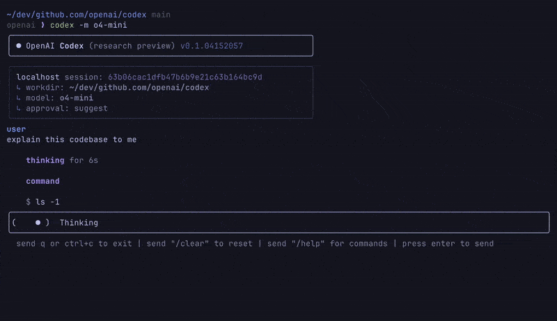
下面做一个最小测试：让 Codex CLI 在一个新文件夹里创建 hello.py 和 README.md。
照着做：
Windows PowerShell：
mkdir hello-codex
cd hello-codexmacOS / Linux 终端：
mkdir hello-codex
cd hello-codexcodex部分版本会在启动后提供模式选择，可以先选择 Plan / 计划。如果没有看到模式选择，就直接输入下面的任务，让 Codex 只给计划、不要马上改文件：
请先使用计划模式，为当前目录里的 Python Hello World 示例制定一个简短计划。
暂时不要修改文件。
目标：
1. 新建 hello.py
2. 内容输出 Hello, Laffey API!
3. 新建 README.md，说明运行命令hello.py 和 README.md。 计划没问题，请按这个计划执行。 hello.py
README.mdhello.py 预期内容类似： print("Hello, Laffey API!")Windows PowerShell：
python hello.pymacOS / Linux 终端：
python3 hello.py Hello, Laffey API!成功标志：
Codex CLI 能创建文件，并且 hello.py 能正常运行。如果 Codex CLI 能打开，但请求失败，优先检查这三件事：
Codex 常用命令
| 命令 | 用途 |
|---|---|
codex | 正常启动，适合第一次使用 |
codex app | 启动 Codex App |
codex --version | 查看版本，确认是否安装成功 |
npm install -g @openai/codex | 重新安装或升级 npm 版本的 Codex CLI |
第五步：配置 Claude Code
这一节适合想使用 Claude Code 的用户。
Claude Code 是在终端里使用的编程 agent，适合让它阅读项目、修改代码、运行命令。
Laffey API 支持 Claude / Anthropic 分组。使用前请先创建一个绑定 Claude / Anthropic 分组的 API Key，并按前面的步骤导入 CC Switch。
Claude Code 安装
Claude Code 需要先安装 Node.js 18 或更新版本。
Windows 安装 Claude Code
照着做：
点击 Windows 开始菜单，搜索 PowerShell，打开 Windows PowerShell。
node -v
npm -vv22.x.x 和 10.x.x，说明安装成功。npm install -g @anthropic-ai/claude-code --registry=https://registry.npmmirror.com claude --version成功标志：
claude --version 能显示版本号。如果 claude --version 找不到命令，先关闭 PowerShell 再重新打开。如果仍然不行，再检查 Node.js 和 npm 是否安装成功。
macOS 安装 Claude Code
照着做：
npm install -g @anthropic-ai/claude-codeclaude --version成功标志：
claude --version 能显示版本号。Claude Code 使用：写一个 Hello World
下面只做一个最小示例：让 Claude Code 在空文件夹里写一个 hello.py。这个示例的目的，是确认 Claude Code 已经能通过 Laffey API 正常工作。
照着做：
Windows PowerShell：
mkdir hello-claude
cd hello-claudemacOS 终端：
mkdir hello-claude
cd hello-claudeclaudeClaude Code 通常可以按 Shift + Tab 在不同模式之间切换。切到 Plan Mode / 计划模式 后再输入：
请先为当前目录里的 Python Hello World 示例制定一个简短计划。
暂时不要修改文件。
目标：
1. 新建 hello.py
2. 内容输出 Hello, Laffey API!
3. 新建 README.md，说明运行命令hello.py 和 README.md。Shift + Tab 切回可执行修改的模式。计划没问题，请按这个计划执行。 hello.py
README.mdhello.py 预期内容类似： print("Hello, Laffey API!")Windows PowerShell：
python hello.pymacOS 终端：
python3 hello.py Hello, Laffey API!成功标志：
Claude Code 能创建文件，并且 hello.py 能正常运行。如果 Claude Code 能打开，但请求失败，优先检查这三件事：
Claude Code 常用命令
| 命令 | 用途 |
|---|---|
claude | 正常启动 Claude Code |
claude --version | 查看版本，确认是否安装成功 |
/login | 在 Claude Code 内重新登录或切换账号 |
npm install -g @anthropic-ai/claude-code | 重新安装或升级 npm 版本的 Claude Code |
常见问题
CC Switch 导入失败
按顺序检查：
ccswitch:// 链接。处理方式：
| 问题 | 处理 |
|---|---|
| 点击没反应 | 重新安装 CC Switch，并打开一次 |
| 浏览器弹窗被拦截 | 允许打开外部应用 |
| 提示未安装 | 检查 ccswitch:// 协议是否注册 |
| 导入了但不能用 | 在 CC Switch 中确认已切到对应供应商 |
| Codex 能导入但 Claude 不能用 | 检查 Claude Code 的 Key 是否绑定 Claude / Anthropic 分组 |
| Claude 能导入但 Codex 不能用 | 检查 Codex 的 Key 是否绑定 OpenAI / Codex 分组 |
最小排查顺序：
先打开 CC Switch
再重新点导入到 CCS
再允许浏览器打开外部应用
最后检查 Key 是否选对分组Codex CLI 不能用
按顺序检查：
codex --version 是否能显示版本。~/.codex/config.toml 或 %userprofile%\.codex\config.toml 是否存在。auth.json 里是否是你的 Laffey API Key。base_url 是否是 https://当前站点域名，不要多写 /v1。最小排查顺序：
先跑 codex --version
再检查 CC Switch 是否切到 Laffey API / Codex
再重新打开终端
最后检查 Key、base_url、余额和分组如果 codex --version 都不能显示版本，说明 Codex CLI 还没有安装好，先回到“Codex CLI 安装”重新检查 Node.js、npm 和安装命令。
Claude Code 不能用
按顺序检查：
claude --version 是否能显示版本。ANTHROPIC_BASE_URL 是否是 https://当前站点域名。ANTHROPIC_AUTH_TOKEN 是否是 sk-你的API密钥。Shift + Tab 手动切换模式，再继续输入。最小排查顺序：
先跑 claude --version
再检查 CC Switch 是否切到 Claude / Anthropic 供应商
再重新打开终端
最后检查 ANTHROPIC_BASE_URL、ANTHROPIC_AUTH_TOKEN、余额和分组如果 claude --version 都不能显示版本，说明 Claude Code 还没有安装好，先回到“Claude Code 安装”重新检查 Node.js、npm 和安装命令。
API Key 泄露了怎么办
如果 API Key 被别人看到，立刻按下面做：
成功标志：
旧 Key 已经不能使用，新 Key 可以正常请求。不要把 API Key 发给别人，也不要截图发到公开群里。只要别人拿到这个 Key，就可能消耗你的额度。
换服务商或换分组怎么做
推荐方式：
手动方式：
新手建议使用推荐方式。只有在 CC Switch 无法导入或需要手动排查时，再使用手动方式。
最后再确认一次：
Codex 用 OpenAI / Codex 分组。
Claude Code 用 Claude / Anthropic 分组。
切换供应商后，重新打开终端。